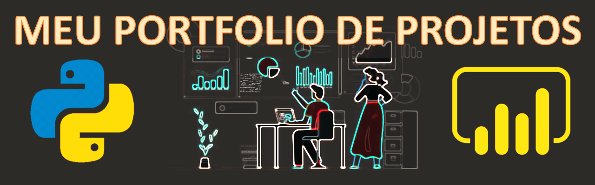

Meu objetivo é gerar valor, aplicando Ciência de Dados e Business Intelligence para resolução de problemas nas mais diversas áreas.
Apresento os meus Projetos que estão em constantes atualizações, adicionados periodicamente, espero que gostem.
Carlos Alberto Bonfim
Sou Engenheiro de Produção por formação e atualmente trabalho como Analista de dados. Fui Engenheiro da Qualidade e meu foco é resolução de problemas. Tenho experiência com mais de 8 anos em ferramentas da Qualidade e Estatística, como CEP, DOE, Anova, Teste de hipóteses, análises e priorização de problemas com uso de método ciêntifico e já apliquei Machine Learning em problemas reais.
Estou cursando minha segunda graduação, Bacharelado em Ciência de Dados e me formo em 2023
O que eu sei fazer?
Análise Exploratória
Visualização
Machine Learning
Analytics
Python
Power BI
Web Scrapy
SQL
Deploy
O que eu tenho feito com Python?
passe o mouse para mais informações. Para formato galeria Clique aqui.
Análise de fraudes em transações imobiliárias
Projeto com PCA e Autoencoder para definição de score de fraude para cada transação. Clique para conhecer:
Parte 1 - Análise Exploratória
Parte 2 - Transf. e Feature Engineering
Parte 3 - Modelagem
Repositório
Detector de Fraudes
Modelo treinado para detecção de fraudes em transação com cartões.
Clique para conhecer:
Projeto
Repositório
Previsão de CHURN
Modelo treinado com um webapp de demonstração para previsão de churn de clientes
Clique para conhecer:
Projeto
Repositório
WebApp
Previsão de preços de estadia
Modelo treinado para previsão de preços de estadia do Airbnb no Rio de Janeiro.
Clique para conhecer:
Projeto
Repositório
Recomendador de Músicas
Sistema de recomendação baseado em cluster com dados reais coletados da API do Spotify.
Clique para conhecer:
Projeto
Repositório
Filtros em imagens com OpenCV
Este é o Projeto 1 da Master Class de Visão Computacional do Sigmoidal com Carlos Melo.
Clique para conhecer:
WebApp
Repositório
NLP e Modelos Lineares
Previsão com Processamento de Linguagem Natural e Modelos Lineares.
Clique para conhecer:
Projeto
Repositório
Series temporais com Prophet
Demonstração de previsão de preços utilizando Prophet do Facebook.
Clique para conhecer:
Projeto
Repositório
Marketing Analytics
Demonstração de um Projeto de Marketing Analytics para segmentos de "Food Delivery".
Clique para conhecer:
Projeto
Repositório
Sentiment Analysis
Neste projeto aplico Análise de Sentimentos à discursos políticos e análise ao longo do tempo.
Clique para conhecer:
Projeto
Repositório
Recomendador de filmes
Neste projeto utilizo NLP e similaridade por coseno para filtros baseado em conteúdo para recomendar filmes.
Clique para conhecer:
Projeto
Repositório
Prevendo valores de imóveis
Neste projeto foi treinado um modelo para previsão de valores em imóveis na cidade de Boston e criado um WebApp.
Clique para conhecer:
WebApp
Repositório
O que eu tenho feito com Power BI?
passe o mouse para mais informações. Para formato galeria Clique aqui.
Relatório de Gestão de Projetos
Relatório para acompanhamento de Projetos com informações gerais e gráfico de Gantt.
Link Público
Relatório Financeiro - Receita e Fluxo de Caixa
Relatório financeiro interativo com análise de receita e fluxo de caixa.
Link Público
Relatório Fraudes Analytics
Relatório de Fraudes em transações imobiliárias com Rank baseado em Machine Learning.
Link Público
Dashboard de Vendas e Financeiro
Dashboard que mostra relatório de vendas, um painel com DRE e outro com simulador do tipo "what if".
Link Público
Dashboard de Reclamações do Consumidor
Dashboard que mostra informações sobre reclamações do site "consumidor.gov", como total, média de tempo, índice de resoluções, média das notas e índice respondidos.
Link Público
Dashboard Análise de Sentimentos
Dashboard para Análise de Sentimentos dos Tweets com coleta de dados em python, clique no link abaixo e confira.
Link Público
Dashboard Financeiro e fluxo de caixa
Dashboard financeiro com fluxo de caixa totalmente interativo, clique no link abaixo e confira.
Link Público
Dashboard de Músicas
Dashboard que mostra os artistas por músicas, popularidade, tempo, ritmo entre outros atibutos.
Link Público
Dashboard Financeiro
Dashboard para contas a pagar e receber e com DRE (Demonstrativo do Resultado do Exercício).
Link Público
Dashboard OEE
Dashboard para Produção, com indicador de OEE (Overall Equipment Effectiveness), horas e produtividade.
Link Público
Dashboard Gerencial
Dashboard resultado do desafio da missão 1 do BootCamp Power BI do Leonardo Karpinsky. A fábrica do papai Noel precisava de ajuda, criei um relatório para ele, confira.
Link Público

Dashboard para CEP
Demonstração de um dashboard para Controle Estatístico de Processos, com análises de CP, CPk, PP e PPK, além da média e desvio padrão.
Link Público